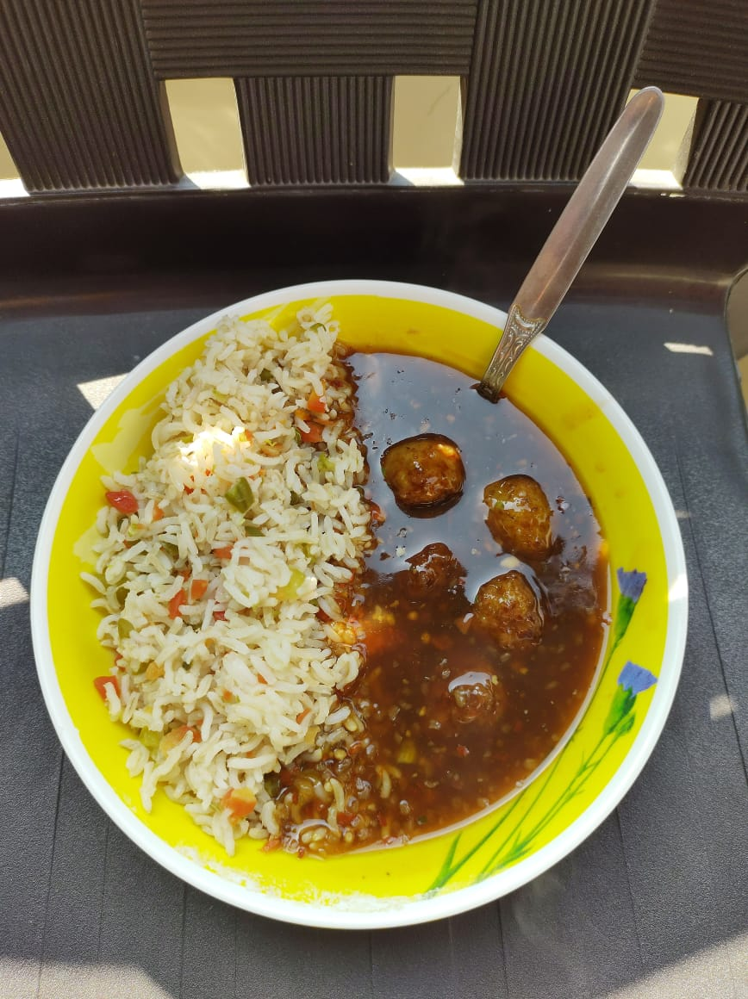

Fried Rice And Manchurian
fried rice with manchurian balls with detailed photo and video recipe.
A classical fusion recipe made by tossing the long grain rice in a manchurian sauce.
It is basically a combination of 2 indo chinese recipe which has the crunchy taste from a bowl of traditional fried rice and loaded with manchurian flavour.
Rhis can be easily a balanced meal for your lunch box or tiffin box recipe as it has the carbs from rice and fibre and protein from manchurian balls.

INGREDIENTS
- For Manchurian Balls
- Cabbage (shredded) - 2 cups
- Carrot (finely chopped) - 1
- Spring Onion (finely chopped) - 3 tablespoon
- Ginger Garlic Paste - 1/2 tablespoon
- Chilli Sauce - 1 tablespoon
- Salt - 1/2 tablespoon
- Maida - 1/4 cup
- Corn Flour - 1/4 cup
- Oil (for frying)
- For Fried Rice
- Oil - 2 tbsp
- Ginger (chopped) - 1 inch
- Garlic (chopped) - 2 clove
- Chilli - 1
- Spring Onion (chopped) - 2 tablespoon
- Onion (finely chopped) - 1/2
- Capsicum (finely chopped) - 1/2
- Carrot (finely chopped) - 1
- Vinegar - 2 tablespoon
- Salt - 1/2 tablespoon
- Corn Flour Slurry - 1/4 cup
- Cabbage (shredded) - 1/4 cup
- Cooked Rice - 3 cup
- Pepper Powder - 1/4 tablespoon
- Spring Onion (chopped) - 2 tablespoon
STEPS
- In a large bowl take 2 cup cabbage, 1 carrot, 3 tbsp spring onion, ½ onion, ½ tsp ginger garlic paste, 1 tbsp chilli sauce and ½ tsp salt. Mix well making sure everything is well combined.
- Now add ¼ cup maida and ¼ cup corn flour. Combine well forming a soft dough. if the dough is loose, then add a tbsp of maida and form a dough.
- Grease hands with oil and prepare a small ball sized balls.
- Deep fry in hot oil keeping the flame on medium.
- Fry until the ball turns golden brown and crisp. Drain off the manchurian balls over kitchen paper and keep aside.
- In a large wok take 2 tbsp oil, 1 inch ginger, 2 clove garlic, 1 chilli and 2 tbsp spring onion stir fry on high flame without burning.
- Now add ½ onion, ½ capsicum and 1 carrot. Stir fry on high flame without overcooking the vegetables.
- Now add 2 tbsp vinegar, 2 tbsp soy sauce, ½ tbsp chilli sauce and ½ tsp salt. stir fry until everything is well combined.
- Add ¼ cup corn flour slurry. To prepare corn flour slurry, mix 1 tsp corn flour in ¼ cup water. Cook until the sauce turns glossy.
- Now add prepared manchurian balls and ¼ cup cabbage. Stir fry until the balls are well coated with sauce.
- Further, add 3 cup cooked rice and ¼ tsp pepper powder. Stir fry without breaking the rice grains.
- Finally, add 2 tbsp spring onion and enjoy veg manchurian fried rice.
Back To Home Page